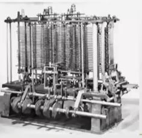
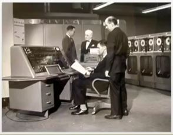
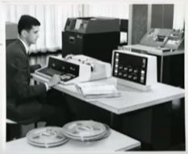
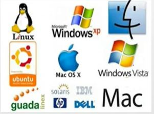

Tema 1.3
Historia de los Sistemas Operativos
Evolución Generacional de los Sistemas Operativos con Base al Hardware

Generación 0 (1940)
Carencia Total de Sistemas Operativos
Completo acceso al lenguaje Máquina
Primera Generación (1945-1955)
Bulbos y Conexiones
Carencia de Sistemas Operativos
Funcionaba de un solo proceso a la vez
Trabajos de un solo usuario
Se pagaba una tarifa estandar

Segunda Generación (1955-1965))
Transistores y sistemas de procedimientos por lotes (Batch)
Aparecen los sistemas operativos para sistemas compartidos
Independencia del dispositivo

Tercera Generación (1965-1980)
Circuitos integrados y multiprogramación
Difusión de la multiprogramación
Sistemas de modos múltiples
Interponen una capa de software entre el usuario y la máquina
Aparecen los lenguajes de control de trabajo
Aparecen los sistemas de tiempo real
Cuarta Generación (Decada de los 80´s)
Uso de los microprocesadores
Los computadores dejan de ser un lujo
Aparece el software amigable con el usuario
Desarrollo de sistemas operativos de red distribuidos
Énfasis de la seguridad

Quinta Generación (2000-actualidad)
Produjo grandes cambios en el mercado en los sistemas operativos
Se busca la mejor comodidad para el usuario con sus sistemas operativos
Video
Evaluación
Empezar Evaluación del Tema